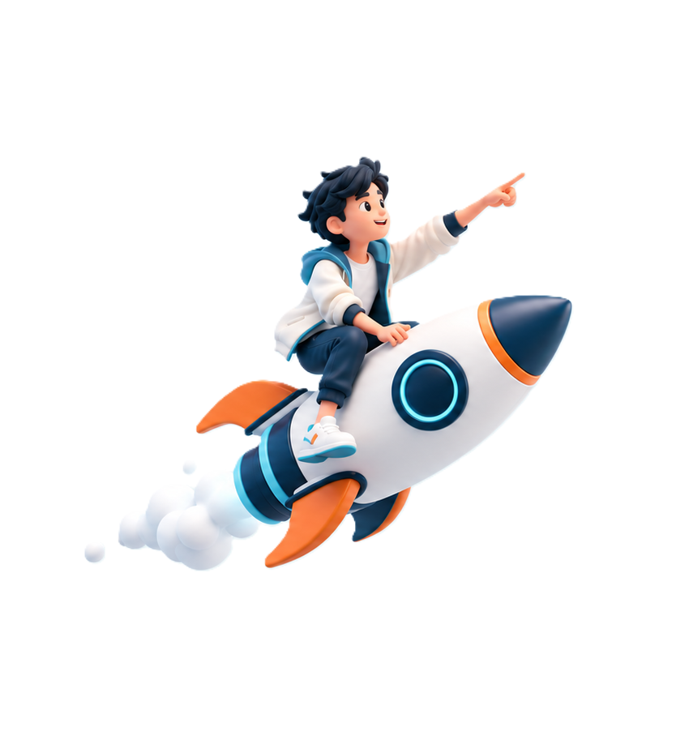

Fix the survey to the ground
Reconnaissance, datum, benchmarks, GCPs, checkpoints, and corridor limits are planned before the primary acquisition begins.
DGPS/RTK · Total station · Levelling · GNSS/IMUIris Aerial plans the control, captures the site, builds the terrain model, and prepares the drawings and spatial datasets that road, rail, urban, and infrastructure teams can carry into design.


The supplied casework follows a repeatable logic: understand the design question, establish control, acquire complete coverage, validate the model, and deliver information in the engineer’s working format.

Reconnaissance, datum, benchmarks, GCPs, checkpoints, and corridor limits are planned before the primary acquisition begins.
DGPS/RTK · Total station · Levelling · GNSS/IMURGB photogrammetry, LiDAR, satellite stereo, or ground survey is selected around visibility, access, coverage, and required detail.
Flight paths · ROW coverage · Overlap · Field QAPoint clouds are calibrated and classified, imagery is orthorectified, terrain models are checked, and outputs are prepared for CAD and GIS review.
DTM/DSM · Contours · L-sections · Cross-sections · Base mapsThis section is designed and ready for approved client quotations. The preview uses clearly marked sample copy so no unverified endorsement is presented as fact.
Sample · approval requiredFrom planning through delivery, the team kept technical outputs practical for the people who had to review and use them.
Sample · approval requiredThe survey package made site conditions easier to discuss without losing the field context behind the data.
Sample · approval requiredThe review structure made visual change easier to locate, compare, and carry into a responsible decision.
Akshaa connects source imagery, detected objects, location, time, and human review so a visual cue can become traceable evidence instead of an isolated bounding box.


Send the location, corridor length or site extent, design stage, accuracy expectation, and required output. That is enough for us to begin framing the survey approach.
 Anand Raj
Anand Raj
 CEG
CEG Central Railway
Central Railway Eastern Railway
Eastern Railway 50Hertz
50Hertz Northern Railway
Northern Railway Vedanta
VedantaA railway alignment, mountain road, urban plan, mine, and reservoir do not need the same capture plan. Iris Aerial combines field control, aerial and satellite sensing, processing, and engineering outputs around the way each result will be used.
Choose the project environment closest to yours. Each programme begins with control and ends with deliverables prepared for the team making the next decision.
Topography, alignment, structures, yards, drainage, and existing assets are captured as one coordinated base for new lines, doubling, and detailed engineering.
Mountain corridors and long rights of way are mapped with the capture method suited to access, vegetation, relief, and design accuracy.
Reality capture, feature extraction, and GIS-ready layers help planners read land use, infrastructure, drainage, and change without separating the map from its source.
Repeatable terrain capture supports volume review, pit and dump mapping, slope context, and pre/post activity comparisons.
Hydrographic and aerial observations are brought together for reservoirs, channels, dams, watersheds, irrigation, and flood-sensitive landscapes.
Define the engineering question, coverage, accuracy, datum, and output format.
Establish GCPs, benchmarks, checkpoints, and the survey control network.
Plan complete aerial, LiDAR, satellite, or ground coverage with field QA.
Calibrate, classify, orthorectify, extract, and independently review the data.
Issue CAD/GIS-ready terrain, drawings, sections, inventories, and reports.
Selected programmes from the supplied Iris Aerial casebook, shown with the capture choice and the engineering handoff together.
Orthophoto, DTM, DSM, contours, tunnel alignment, and approach-road inputs.
Classified point cloud, DTM, orthophoto, and contours for feasibility and design.
Alignment, L-section, cross-sections, yard and ESP plans, and hydrological inputs.
Explore project methods and deliverables in our case study.
Bridges, RUBs, yard layouts, profiles, cross-sections, and hydrology.
Terrain models, feature extraction, infrastructure layout, and 3D context.
50 cm stereo imagery, DGPS control, DTM, contours, and orthorectification.
Share the corridor or site, design stage, coverage, accuracy expectation, and intended handoff. We will help shape the control and capture plan.
Akshaa connects imagery, location, time, task-specific detection, and human review. Urban teams use it to understand growth and assets; authorised defence teams use it to find, compare, and assess strategic observations.

Urban evidence often lives across survey imagery, spreadsheets, GIS files, inspection notes, and repeated site visits. Akshaa brings those observations into one reviewable spatial workflow.
Manual comparison makes it difficult to track new construction, missing assets, encroachment, corridor conditions, or progress across large areas and repeated captures.
Bring in georeferenced drone, aerial, satellite, and project imagery with time and area context.
Use task-specific models and spatial rules to locate objects, conditions, and change candidates.
Keep the source visible while reviewers accept, reject, annotate, and export observations.

Locate and organise roads, buildings, utilities, vegetation, and project-specific features.
Compare aligned captures and keep new, missing, or altered observations tied to time.
Review construction and site change against the previous capture or planned context.
Move confirmed observations into maps, inventories, reports, and operating workflows.
Large optical scenes and repeated captures create more visual information than an analyst should have to scan unaided. Akshaa structures that workload without hiding the imagery or the reasoning trail.

Manual scanning across large imagery sets can make subtle positional, structural, and asset changes difficult to locate and prioritise consistently.
Task-specific models locate relevant objects across optical scenes and refine broad detections into useful asset classes.
Scope · aircraft / ships / vehicles / infrastructureTime-separated captures are aligned so newly observed, absent, static, and changed objects can be reviewed together.
Evidence · before / after / detected changeAsset density, proximity, class severity, and change indicators help authorised analysts focus and corroborate findings.
Handoff · prioritised review / assessment reportAkshaa accelerates visual review and structures evidence; it does not replace authorised judgement. Findings remain connected to source imagery and should be corroborated before operational use.
We choose the right tools for your site and the information you need. Drones capture detail, satellites cover large areas, and ground instruments check positions. We turn those measurements into maps, models, and drawings your team can use.

LiDAR uses laser pulses to measure the shape and height of the ground. It is useful for road corridors, uneven terrain, and sites with vegetation.
Photogrammetry turns overlapping photographs into measurable maps and 3D models. It helps teams inspect sites and compare construction progress.
Satellite images help us understand large areas without visiting every location. They support route planning, land-use mapping, and change monitoring.
DGPS uses satellite positioning, while an electronic total station measures angles and distances. Together, they give aerial maps reliable ground reference points.
Ground-penetrating radar sends signals below the surface to help locate buried utilities, layers, and possible voids without digging.
Hydrography measures the shape and depth of underwater ground. It supports work on rivers, reservoirs, channels, and dams.
GIS organises information on a map. AI and Akshaa help find features and changes in imagery, while people review the results before they are used.
Survey, engineering, machine learning, design, and business bring us together. Field days, exhibitions, festivals, and match nights keep the team human.


Meet the people behind our survey, engineering, machine learning, design, and business work.
Join a team working across geospatial systems, field engineering, product design, and applied AI. We value careful thinking, clear communication, and people who stay curious after the first answer.

Choose the discipline closest to your work. Complete the form and we will prepare an email addressed to our careers team.
careers@irisaerial.in ↗For survey, GIS, remote-sensing, photogrammetry, LiDAR, and field-operations profiles.
For computer vision, geospatial ML, data engineering, MLOps, and applied-research profiles.
For business development, project coordination, product communication, and client-success profiles.
Application for the selected role · tell us about yourself and share a concise resume.